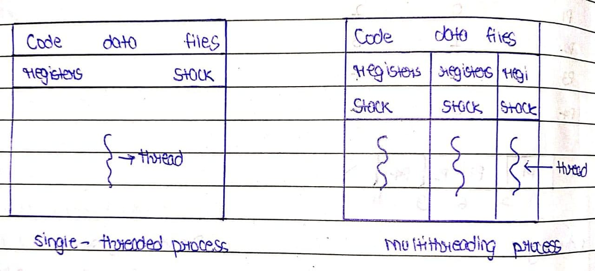

Operating System Project
Instructor: Ass Prof. Swetha T
Team Name : Coder-army-loading
Arpan Shukla : Team Leader(1SJ24CS013)
Amar Nidoni : Team Head(1SJ24CS010)
Harsh Raj : 1SJ24CS042
Kumar Swamy N : 1SJ24CS062
Kartik CG : 1SJ24CS053
Adithya B : 1SJ24CS004
Gokul S
Batta Likith Chowdary : 1SJ24CS185
Why study multithreading and understanding code of fork()
Our team will tell a story of Gary Kildall(The man who discovered(credited) os)
Let's Start a story
Let's ask a question why you studied multithreading
Our team will tell : The story of Garry sir and OS(assume for some time os is physical(living creator)
Once upon a time Garry sir is romming in memory he found a process named as amar(process p1) he found some parts amar is sharing in memory
- Stack : Which stores( Activation record(Local variable , Fn parameter , return address))
- Heap : Which (Dynamic Memory Allocation)
- Data section : Which stores(Global , Static Variables)
- Code(Text Section) : Which stores program instruction(imp)
- Rem once psp mam told A program is a set of instructions(if you want to understand how it happen i will atach a link below of COA)
Understand why multithreading discovered
Gary Kildall sir sees a common think in amar(process). Amar(p1) coming to os class and sitting on same bench but with new clothes everday?
The same bench in process(p1) refereed as the common part of process(thread) and clothes are referred as unique for each thread(p1)
| Shared among thread |
Unique for each thread |
| Code Section |
Thread id |
| Data Section |
Register Set |
| Os Resources |
Stack |
| Open files & signals , heap |
Program Counter |
Conclusion: Gary Kildall sir Takes Shared among each thread as common in each process(thread)
Conslusion: Gary Kildall sir takes unique for each thread
Hence : Multithreading is discovered . A question should be arises in your mind what are the advantages of sharing and not sharing

Advantages of Multithreading?You should ask what are benefits
- Responsiveness
- Faster Context Switch
- Resource Sharing
- Economy
- Communication
- Utilization of Multiprocessor Architecture